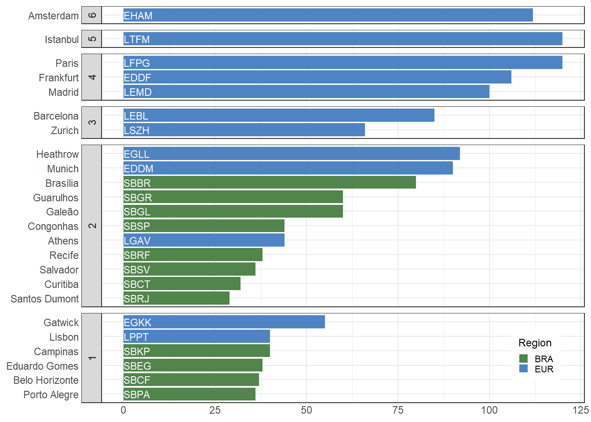
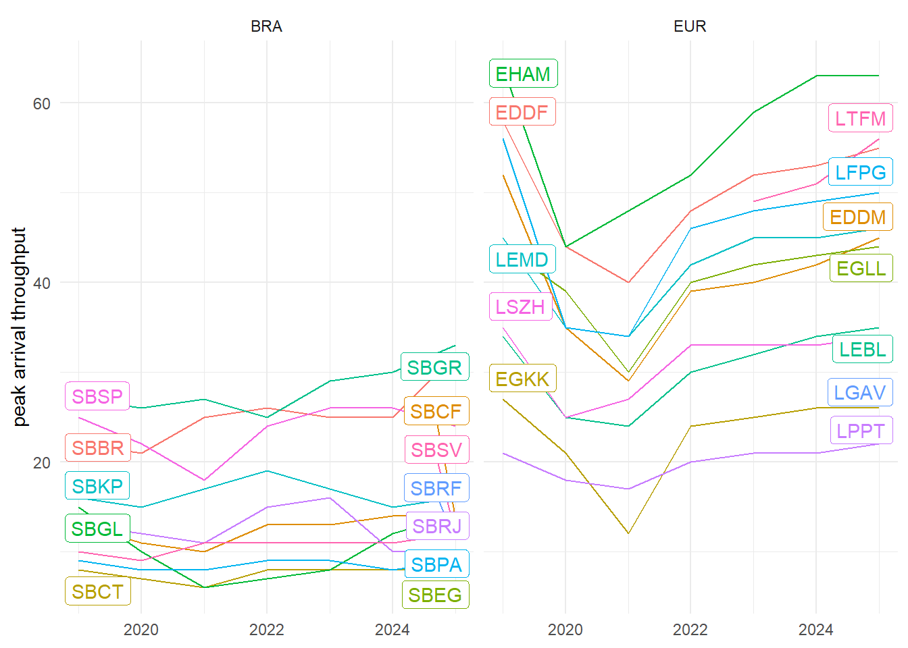
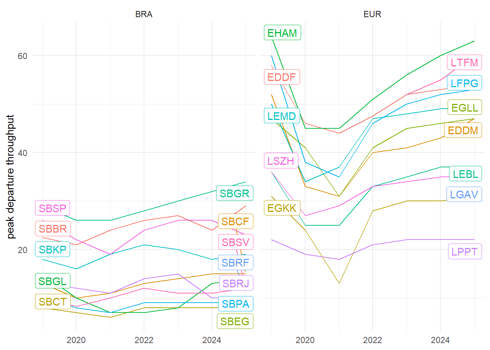
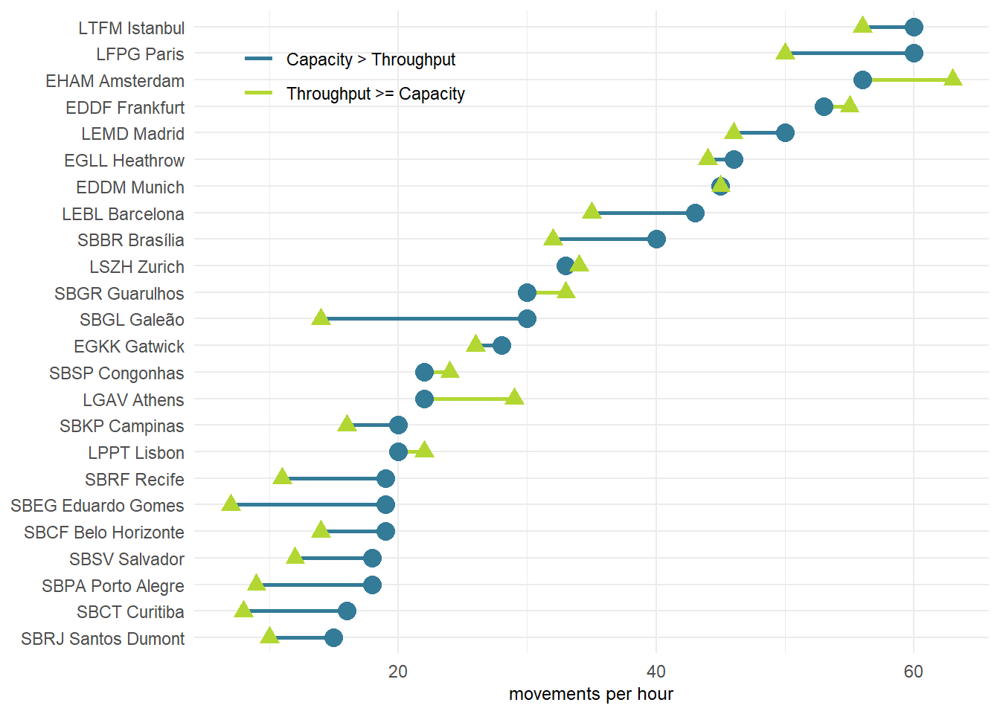
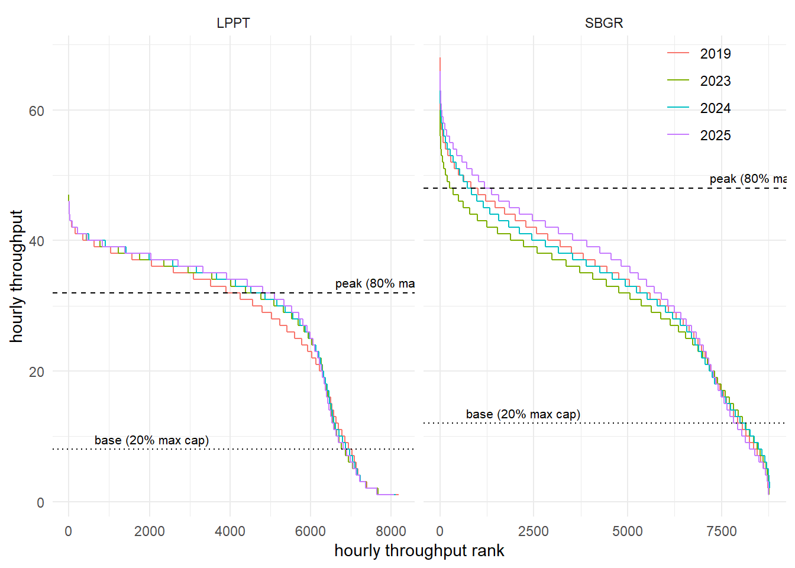
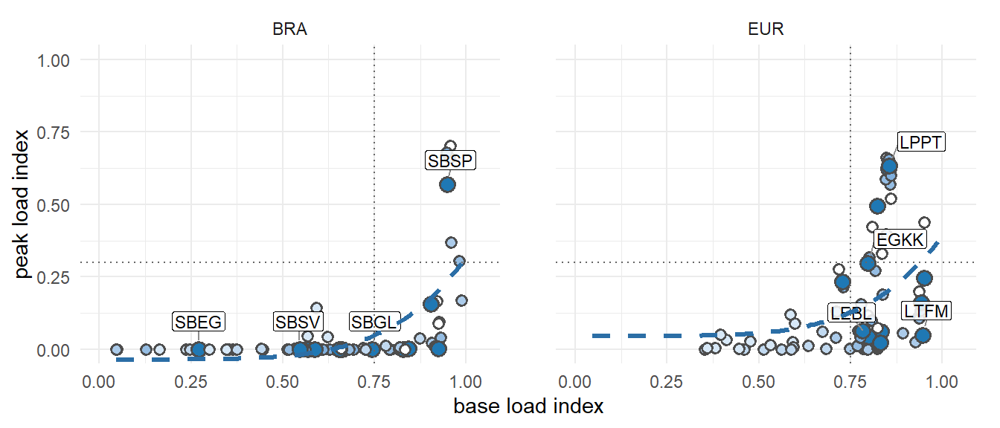
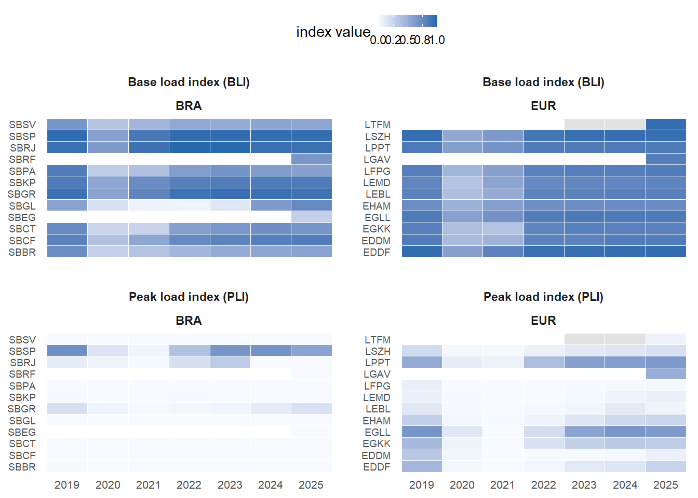

5 Capacity and Throughput
Maintaining an optimal network flow necessitates an equilibrium between airport capacity and flight demand. This section delves into assessing capacity and throughput using various key performance indicators (KPIs) at the airport level. Airspace users expect sufficient capacity provision addressing the levels of demand. With higher levels of capacity utilisation, airspace users will experience congestion and constraints (e.g. higher inefficiency, increased delay/lower punctuality and predictability). However, planning and staffing for peak situations may come at significant costs to airspace users as well. In that respect it is essential to understand the trade-off between capacity provision and capacity consumption (i.e. traffic demand) as it impacts the overall system performance. Capacity and throughput analyses therefore show to what extent air navigation services are capable of accommodating the demand. The previous sections showed the level of overall traffic recovery in both regions. The increasing demand put strain on the systems and local knock-on effects amplified the uncertainty and variability of the expected traffic levels. This chapter may therefore also highlight the flexibility of air navigation services to accommodate such distortions of the schedule.
5.1 Peak Declared Capacity
Peak Declared Capacity refers to the highest movement rate (arrivals and landings) at an airport using the most favourable runway configuration under optimal conditions. The capacity value might be subject to local or national decision-making processes. The indicator represents the highest number of landings an airport can accept in a one-hour period.
In both regions, peak capacity is declared by the respective authority. In Brazil, this function is performed by DECEA. Within the European region, the airport peak capacity is determined on a local or national level. The processes consider local operational constraints (e.g. political caps, noise quota and abatement procedures) and infrastructure related limitations (e.g. apron/stand availability, passenger facilities).
The capacity of airports (and the associated runway system) is predominantly influenced by their infrastructure. The existence of independent parallel runways, e.g. Brasilia (SBBR) and Munich (EDDM), can support decisively the resulting capacity. Furthermore, operational procedures can lead to an increase in airport capacity. London Heathrow (EGLL), in the past, and Guarulhos (SBGR) in recent years show that changes in operational procedures can help the airport absorb significant traffic increases or reduce the additional sequencing time in the terminal airspace. Guarulhos, for example, benefited from the implementation of segregated operations under VMC conditions, and Heathrow increased its capacity through the introduction of time-based separation on final.
Previous reports showed the relatively stable nature of the overall peak declared capacity. It is anticipated that future changes to the overall capacity level will depend on changes to the declaration process or significant changes of the operational concepts. Accordingly, this edition works with the most recent declared maximum (global) capacities for each study airport.
Figure 5.1 shows the declared peak capacity for the study airports. As observable in the case of Amsterdam Schiphol (EHAM, 6 runways), the number of runways is not a direct indication of the maximum capacity. For example, the two-runway airports Brasilia (SBBR), London Heathrow (EGLL), and Munich (EDDM) share a similar runway system layout and range above the 3-runway systems of Barcelona (LEBL) and Zurich (LSZH). London Gatwick (EGKK) is renowned for its maximisation of its single-runway throughput. Please note that Lisbon (LPPT) was added to this comparison report and capacity values for earlier years were not available at the time of writing.
As mentioned above, the capacity declaration/determination process takes into account the varying local conditions and constraints. It balances the need to accommodate growth vs policy priorities and public interests. A potential area for further research could be a closer investigation of the operational concepts deployed and the variations of the declared capacity with the local runway system characteristics.
5.2 Peak Arrival Throughput
This comparison report uses the GANP KPI to measure the peak arrival throughput as the 95th percentile of the hourly number of landings observed at an airport (International Civil Aviation Organization, n.d.). The measure gives an indication of the achievable landing rates during “busy-hours”. It is an indication to what extent arrival traffic can be accommodated at an airport. For congested airports, the throughput provides a measure of the effectively realized capacity. Throughput is a measure of demand and therefore comprises already air traffic flow or sequencing measures applied by ATM or ATC in the en-route and terminal phase. For non-congested airports, throughput serves as a measure of showing the level of (peak) demand at this airport.
Figure 5.2 compares the observed annual peak arrival throughput at the study airports in Brazil and Europe. On average, the busiest hour of the Brazilian airports under study did not suffer a significant reduction. This signals that peak arrival demand remained fairly constant during the pandemic. An increased arrival peak throughput was serviced at Brasilia (SBBR), Guarulhos (SBGR), and Confins (SBCF). Services at Galeão (SBGL) observed a significant shift in the traffic pattern. The peak arrival throughput fell sharply with the pandemic and has not yet recovered. This overall picture is contrasted by the pandemic related drop of overall traffic at European airports. The overall reduction resulted in significantly lower peak hours. The recovery pattern is also visible in the peak arrival throughput behaviour.

With Figure 5.2, a further difference between both regions becomes apparent. The peak arrival throughput represents the achieved peak service rate utilising the available arrival runway system capacity. On average, the peak arrival throughput is higher in Europe than in Brazil based on the available infrastructure. It is interesting to see that arrival operations at SBGR and Brasilia (SBBR) range at the level of Gatwick (EGKK), while Congonhas (SBSP) remains above Lisbon (LPPT). At the same time, it offers growth potential when these airports are compared to the achievable arrival throughput at dual independent runway operations at Munich (EDDM) or even Heathrow (EGLL).
While the peak arrival throughput varied in Brazil over the past years, the pattern is more homogeneous. Larger variations are explainable with local demand changes. However, compared to Europe, Brazil did not show the scale effects of lower air traffic demand during the pandemic phase. In light with the overall traffic recovery also the pressure on the arrival runway system increased at the European airports. Lisbon (LPPT) shows a level of variation. This suggests that even during the pandemic, operational peaks were serviced consistently at the same level.
5.3 Peak Departure Throughput
In analogy to the previous section, Figure 5.3 shows the peak departure throughput. The latter is determined as the 95th percentile of the hourly number of departures.
A similar picture emerges for the peak departure throughput in both regions. In Brazil, Congonhas reduced the peak departure throughput in comparison with 2024. Curitiba, Porto Alegre, Santos Dumont, and Confins maintained broadly the same level as in 2024. For the other Brazilian airports, the peak departure throughput increased. A continual increase of the peak departure throughput is observed at SBGR, exceeding in 2025 the pre-pandemic 2019 level. This suggests a concerted effort and more efficient use of the runway system for the departure phase.
The pattern in Europe is characterised by the continual air traffic recovery for the majority of the airports. A lesser pronounced variation is observed at Lisbon (LPPT) for which the peak departure rate remained fairly stable over the past years.

5.4 Declared Capacity and Peak Throughput

Comparing the peak declared (arrival) capacity and throughput serviced at the different airports reveals a varying picture. On average, Figure 5.4 evidences that operations at the majority of the airports do not yet observe capacity constraints. In many instances, the achieved throughput ranges about 10 flights per hour below the maximum declared capacity. In 2025, a particularly low utilisation was observed at Galeão (SBGL), where the spread between proxy arrival capacity and peak throughput exceeds 15 flights per hour. Further sizeable margins remain visible at Eduardo Gomes (SBEG), Paris Charles de Gaulle (LFPG), Porto Alegre (SBPA), Brasilia (SBBR), Curitiba (SBCT), Recife (SBRF), and Barcelona (LEBL). It is also noteworthy that a subset of airport services operate at or above their proxy maximum arrival capacity (e.g. EHAM, LGAV, SBGR, SBSP, EDDF, LPPT, and LSZH, with EDDM at parity). These airports are also characterised by a combination of complexity of the aerodrome layout and operational context. It will be interesting to study how these airports facilitate higher levels of demand. Higher peak throughput rates than the proxy arrival capacity were observed at Amsterdam (EHAM), Athens (LGAV), Guarulhos (SBGR), Congonhas (SBSP), Frankfurt (EDDF), and marginally at Lisbon (LPPT) and Zurich (LSZH). The offsets at EHAM and LGAV, and to a lesser extent at SBGR and SBSP, suggest that the simplified 50% proxy for arrival capacity can understate what is operationally achievable at some airports. In the case of Amsterdam (EHAM) there is a political cap on the number of operations per year. This may result in a determined (and declared) hourly rate that does strictly speaking not apply to the operational peak situations.
The analysis of the spread of the declared capacity versus the achieved throughput is useful. However, it provides no indication on how often the demand reaches the declared capacity level. For this purpose, this report determines two characteristic points, i.e. the BLI base load index, and the peak load index PLI.

Comparing the achieved hourly throughput at Guarulhos (SBGR) and Lisbon (LPPT), the ranked-hourly-throughput example depicts a higher level of peak throughput traffic numbers at SBGR. The overall patterns are similar across the studied years. Lisbon (LPPT) observed an increase in its overall traffic throughputs as the hourly throughputs for 2023 and 2025 exceed the pre-pandemic levels of 2019, with 2024 remaining at a comparable level. Guarulhos (SBGR) experienced a bounce-back with the continual increase in its hourly throughput from 2023 to 2025, bringing the upper part of the ranked curve back closer to the pre-COVID 2019 pattern.
In terms of demand pressure, Lisbon observed a substantially higher share of hours with throughputs above 80% of its declared capacity than SBGR, and this share increased further in 2025. As the overall ordered throughput shows a gradual reduction gradient at Guarulhos (SBGR), combined with a large spread of the peak and base level, there exists available capacity at the airport. Lisbon shows a narrower spread. On top, the existence of night flying restrictions is clearly visible for LPPT with its distribution tail.
The ranked-hourly-throughput example shows that multiple factors influence the interplay between the declared capacity and observed throughputs. Similar to comparing only the number of runways and not the runway system utilisation, focussing on the difference between declared capacities, demand periods and operating conditions does not readily allow to compare operations at different airports. For this report, we define peak operating conditions, if the total hourly throughput reaches or exceeds 80% of the declared capacity levels, and accordingly, base load levels, if 20% of more are observed. The peak load index (PLI) accounts then for the number of operating hours at or above the peak level, and respectively, the base load index (BLI) for hours at or above the 20% base traffic level.


The BLI/PLI plot summarises the observed utilisation of the available (i.e., declared) capacity at the study airports in the different regions. It shows the full 2019-2025 airport-year trajectory, while labels are limited to automatically selected 2025 airports that mark different parts of the regional load profile: peak pressure, high base load with limited peaks, low utilisation, and peaky imbalance. Based on this report, airports showing a BLI higher than 0.75 observe a consistent level of demand across the operating hours, while congestion due to peak operating conditions starts to become visible around a PLI of 0.3. Lower PLI values suggest concentrated demand banks, while higher levels of the PLI demonstrate a more consistent use of the available capacity. In Brazil, we observe a high utilisation of the capacity at Sao Paulo (SBSP) in 2019, 2023, 2024, and 2025 comparable to or above pre-COVID levels. For a majority of the airport across the years, no substantial peak loads were measured. This suggests that there is substantial capacity to sustain future growth of air traffic. Rio de Janeiro Santos Dumont (SBRJ) observed moderate loads confirming the role of the airport within the Brazilian system. The major hub in Brazil, SBGR, shows a relatively high base-load-index (BLI), while the peak-load-index (PLI) remains far below the levels observed at LPPT or SBSP. Within the European context, a high utilisation of the available system capacity was observed for London Heathrow, Lisbon, Frankfurt, Gatwick, and Zurich, while EDDF and LSZH combine very high base loads with more moderate peak-load conditions. This suggests that for many of these airports the daily traffic loads returned to similar or higher levels of capacity utilisation than pre-COVID. For the majority of European airports, the peak load index ranges relatively low. This suggests that most of the airports operate currently concentrated short peaks or having growth potential available in terms of traffic load.
The heatmap, Figure 5.7, shows the full airport-year detail and infrastructure utilisation across the year. Splitting the base-load and peak-load indices into separate panels makes it easier to scan the evolution of each load characteristic by airport. We observe a solid use of the study airports in both regions in terms of base traffic levels. The lower traffic levels during the main COVID years are well reflected. Grey cells indicate years where the current input data do not yet support a BLI/PLI estimate. Amongst the study airports, there is a higher share of European airports with more peak operating hours than in Brazil. This might be related to the overall role of the airports and underlying connectivity structure and demand levels already described in earlier chapters. Future work on understanding the drivers between operational concepts and demand may reveal further characteristics of the service provision in both systems.
5.5 Summary
This chapter analysed the relationship between airport capacity, throughput, and demand management across Brazilian and European airports.
On average, declared peak capacities at Brazilian airports tend to be lower than in Europe, suggesting greater flexibility to accommodate future traffic growth at major Brazilian hubs. In contrast, many European airports will increasingly depend on novel operational concepts to achieve further gains, as their existing runway infrastructure and separation standards already impose operational limits.
Comparing the utilisation of capacity based on a new indicator revealed interesting patterns. Most airports currently operate with a margin between declared capacity and observed peak throughput, suggesting that, at present, runway system capacities are not a limiting factor in either region.
Notably, in 2025, low utilisation was observed at Galeão (SBGL), Eduardo Gomes (SBEG), and Paris Charles de Gaulle (LFPG), where the spread between capacity and peak throughput remained large. Conversely, São Paulo Congonhas (SBSP), Guarulhos (SBGR), Amsterdam Schiphol (EHAM), and Athens (LGAV) emerged as airports servicing peak arrival rates close to or above the proxy arrival capacity used in this report.
Overall, the findings highlight that while current capacities are sufficient, maintaining system performance amid projected air traffic growth will increasingly depend on operational innovations and efficient management strategies in both regions.